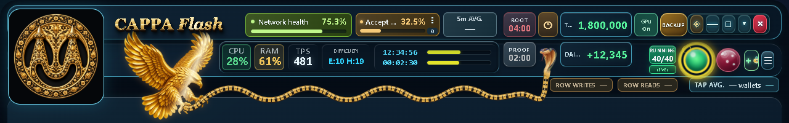

CAPPA Flash kullanım rehberi
Windows 1.2.03 için cüzdanlar, mining ayarları, GPU, ROOT ve PROOF, göstergeler ve yedekleme.

- 1
Cüzdan ekle ve başlat
Ekle düğmesiyle cüzdanı kaydet ve AN Wallet ile QR bağlantısını onayla. Lisanslı cüzdanı kartındaki Başlat düğmesiyle veya üstteki yeşil düğmeyle başlat. Bağlantı istenirse karttaki ↻ ile QR’ı yenile.
- 2
Motor, TAP aralığı ve GPU
Menüden 1, 2 veya 3 motor seç ve yeniden başlatmayı onayla. TAP aralığı 0 sn (ek bekleme yok) veya 1 sn olabilir. Yeni ayar sonraki TAP oturumunda uygulanır. Desteklenen OpenCL sürücüsüyle üst çubuktaki GPU düğmesi Hard TAP hesabını hızlandırabilir. Uygun GPU bulunamazsa CPU kullanılır.
- 3
Otomatik zamanlama
Ön kazım otomatik yürür. Eski cüzdan başlatma gecikmesi, ön kazım düğmesi ve mesaj geçerliliği ayarı menüden kaldırıldı. İmzalı ROOT ve PROOF 60 dakika geçerli. Yeniden deneme normalde 2 sn, mini-epoch’un son dakikasında 1 sn.
- 4
TAP, ROOT, PROOF ve ödül
TAP çizgisi oturumdaki ilerlemeyi, ACCEPT ağın kabul ettiği oturumları gösterir. Canlı sonuç bildirimi kaçarsa Flash PROOF’un işlendiği mini-epoch’u ve kabul durumunu zincirden arar. EPOCH ve DAILY REWARD, doğrulanan ödülleri gösterir.
- 5
Göstergeler, yedek ve günlükler
5m AVG, ağdaki tamamlanmış beş dakikalık pencerenin ortalama ödülünü gösterir. Ağ sağlığı, TPS, CPU, RAM ve satır kotaları üst çubuktadır. Cüzdan yedeği için BACKUP’ı, destek için menüdeki Loglar → Log Kaydet’i kullan.
- 6
Android
Android paketi CAPPA Eagle adıyla ayrı sunulur. Bu rehberdeki motor, GPU ve lisans dosyası adımları Flash Windows içindir.